Biometric Template ProtectionBảo vệ mẫu sinh trắc học
How can a system keep your fingerprint or face so that it still recognises you — yet a stolen database reveals nothing? Làm sao để hệ thống lưu vân tay, khuôn mặt của bạn mà vẫn nhận ra bạn — nhưng CSDL bị đánh cắp cũng không làm lộ gì?
← → Space navigatechuyển slide · L EN/VI · T themegiao diện · M contentsmục lục · F fullscreentoàn màn hình
What we will coverNội dung trình bày
Problem statementĐặt vấn đề
- 1.1Biometric systems and templatesHệ sinh trắc và mẫu sinh trắc
- 1.2When a template leaksKhi template bị lộ
- 1.3Why hashing and encryption are not enoughVì sao băm và mã hoá thường không đủ
- 1.4Why it mattersTại sao vấn đề này quan trọng
A biometric system stores a template — not the raw imageHệ sinh trắc lưu template — không lưu ảnh gốc
| TraitĐặc điểm | Template & data typeTemplate & kiểu dữ liệu |
|---|---|
| FingerprintVân tay | minutiae — set of points (x, y, θ, type)tập điểm (x, y, θ, loại) {(106, 26, 320°, R), (153, 50, 335°, R), …} |
| IrisMống mắt | IrisCode — fixed-length bit stringchuỗi bit độ dài cố định 1011 0010 1110 0101 … |
| FaceKhuôn mặt | embedding — 512-D real vectorvector số thực 512 chiều [0.12, −0.08, 0.31, …] |
[1] Jain, Nandakumar & Nagar, “Biometric Template Security”, 2008 — §1, Fig. 2 (redrawnvẽ lại)
A leaked template is worse than a leaked passwordLộ template nguy hiểm hơn lộ mật khẩu
| PasswordMật khẩu | BiometricSinh trắc | |
|---|---|---|
| Change it after a leak?Đổi được khi bị lộ? | ✓ | ✗ 10 fingers, 1 face — for life10 ngón tay, 1 khuôn mặt — cả đời |
| Is it secret?Có bí mật không? | ✓ | ✗ prints on every glass, face on every cameradấu vân tay trên mọi cốc, khuôn mặt trước mọi camera |
| Compared exactly?So khớp chính xác? | ✓ | ✗ only “close enough”chỉ “đủ gần” |
1Reconstruct the sampleTái tạo mẫu gốc
Invert the template back into an image — e.g. faces rebuilt from deep embeddings [Mai et al. 2019] — then spoof the sensor.Đảo ngược template thành ảnh — ví dụ tái tạo khuôn mặt từ deep embedding [Mai et al. 2019] — rồi giả mạo cảm biến.
2Spoof / replayGiả mạo / phát lại
Inject the stolen template straight into the channel to the matcher; the system sees a “perfect” match.Chèn template bị đánh cắp thẳng vào kênh tới bộ so khớp; hệ thống thấy một lần khớp “hoàn hảo”.
3Cross-matchingLiên kết chéo CSDL
The same template in a bank DB and a hospital DB links one person across services (function creep).Cùng một template ở CSDL ngân hàng và bệnh viện cho phép liên kết một người qua nhiều dịch vụ (function creep).
4Soft-biometric leakageLộ thông tin mềm
Templates also reveal age, gender and ethnicity [Terhörst et al. 2020].Template còn làm lộ tuổi, giới tính, chủng tộc [Terhörst et al. 2020].
[1] Jain et al. 2008, §2.8 · Mai et al., IEEE TPAMI 2019 · Terhörst et al., IJCB 2020
Why ordinary hashing and encryption are not enoughVì sao băm và mã hoá thông thường không đủ
1Same finger, never the same templateCùng ngón tay, không bao giờ cùng template
Two captures of one finger: 33 and 26 minutiae, only 16 in common [1, Fig. 4]. Matching must tolerate this intra-user variability.Hai lần chụp cùng một ngón: 33 và 26 minutiae, chỉ 16 điểm trùng [1, Fig. 4]. So khớp phải chịu được biến thiên nội người dùng này.
2Hashing destroys “closeness”Băm phá huỷ tính “gần nhau”
3Plain encryption leaks at every loginMã hoá thường vẫn lộ ở mỗi lần xác thực
[1] Jain et al. 2008, §2.1 & §3
Why it matters: real breaches, real rulesVì sao quan trọng: sự cố thật, quy định thật
- Chip-based CCCD & VNeID — biometric identity at national scale.CCCD gắn chip & VNeID — định danh sinh trắc ở quy mô quốc gia.
- Decision 2345/QĐ-NHNN (from 01/07/2024): face authentication for online transfers > 10 M VND per transaction or > 20 M VND per day.Quyết định 2345/QĐ-NHNN (từ 01/07/2024): xác thực khuôn mặt khi chuyển khoản trực tuyến > 10 triệu đồng/lần hoặc > 20 triệu đồng/ngày.
- eKYC: open an account remotely with face + ID card.eKYC: mở tài khoản từ xa bằng khuôn mặt + CCCD.
- GDPR Art. 9 (EU): biometric data used to identify a person is a special category — processing is prohibited by default.GDPR Điều 9 (EU): dữ liệu sinh trắc dùng để định danh là loại đặc biệt — mặc định bị cấm xử lý.
- Decree 13/2023/NĐ-CP and the Personal Data Protection Law 2025 (in force 01/01/2026): biometric data is sensitive personal data.Nghị định 13/2023/NĐ-CP và Luật Bảo vệ dữ liệu cá nhân 2025 (hiệu lực 01/01/2026): dữ liệu sinh trắc là dữ liệu cá nhân nhạy cảm.
- ISO/IEC 24745:2022 — how biometric information must be protected → Chapter 2.ISO/IEC 24745:2022 — yêu cầu bảo vệ thông tin sinh trắc → Chương 2.
U.S. OPM (Sep 2015) · vpnMentor / The Guardian (Aug 2019) · thuvienphapluat.vn · Regulation (EU) 2016/679 · ISO/IEC 24745:2022
Theory & technology baseNền tảng lý thuyết
- 2.1Evaluating biometric systems — FAR, FRR, EERĐánh giá hệ sinh trắc — FAR, FRR, EER
- 2.2Four requirements (ISO/IEC 24745)Bốn yêu cầu (ISO/IEC 24745)
- 2.3Threat modelMô hình mối đe doạ
Match score, threshold and the four error metricsĐiểm so khớp, ngưỡng và bốn chỉ số lỗi
- The matcher compares XT with XQ and returns a match score S (similarity).Bộ so khớp so XT với XQ và trả về điểm so khớp S (độ tương đồng).
- Accept if S ≥ τ, reject if S < τ; τ is the decision threshold chosen by the operator.Chấp nhận nếu S ≥ τ, từ chối nếu S < τ; τ là ngưỡng quyết định do bên vận hành chọn.
- For a distance (Hamming, Euclidean) it is reversed: accept if d ≤ τ.Với khoảng cách (Hamming, Euclid) thì ngược lại: chấp nhận nếu d ≤ τ.
- Two kinds of test comparisons:Hai loại phép so khi đánh giá:
- Genuine — same personGenuine — cùng một người
- Impostor — one person's query vs another's templateImpostor — truy vấn người này so với template người khác
| MetricChỉ số | MeaningÝ nghĩa | At threshold τTại ngưỡng τ | ViewpointGóc nhìn |
|---|---|---|---|
| FAR False Accept Rate | rate of wrongly accepting someone elsetỉ lệ chấp nhận nhầm người khác | #impostor(S ≥ τ) / Nimp | SecurityAn toàn |
| FRR False Reject Rate | rate of wrongly rejecting the legitimate usertỉ lệ từ chối nhầm người dùng hợp lệ | #genuine(S < τ) / Ngen | ConvenienceTiện dụng |
| GAR Genuine Accept Rate | rate of correctly accepting the legitimate usertỉ lệ chấp nhận đúng người dùng hợp lệ | 1 − FRR(τ) | ROC y-axistrục y của ROC |
| EER Equal Error Rate | error at the threshold where both errors are equaltỉ lệ lỗi tại ngưỡng mà hai lỗi bằng nhau | FAR(τ*) = FRR(τ*) | compare systems — lower is betterso sánh hệ thống — càng thấp càng tốt |
[1] Jain et al. 2008, §2.1
The FAR–FRR trade-off: one knob, two errorsĐánh đổi FAR–FRR: một núm vặn, hai loại lỗi
- Raise τ (stricter): fewer impostors get in (FAR ↓) but more genuine users are blocked (FRR ↑). Lowering τ does the opposite.Tăng τ (khắt khe hơn): ít kẻ giả mạo lọt hơn (FAR ↓) nhưng chặn nhiều người thật hơn (FRR ↑). Giảm τ thì ngược lại.
- The crossing point of the two curves is the EER.Giao điểm của hai đường chính là EER.
- Moving τ can never reduce both — only a better system can (sensor, features, matcher, multibiometrics) [1, §2.1].Dịch τ không bao giờ giảm được cả hai — chỉ có cải thiện hệ thống (cảm biến, đặc trưng, bộ so khớp, đa sinh trắc) [1, §2.1].
- Choose τ by application:Chọn τ theo ứng dụng:
- banking, payments → low FAR (high τ, users sometimes rescan)ngân hàng, thanh toán → FAR thấp (τ cao, thỉnh thoảng phải quét lại)
- time attendance, office doors → low FRRchấm công, cửa văn phòng → FRR thấp
- EER compares systems; deployments report FRR at a fixed FAR, e.g. “FRR = 2% at FAR = 0.1%”.EER để so sánh hệ thống; khi triển khai thường báo FRR tại FAR cố định, vd. “FRR = 2% tại FAR = 0,1%”.
Illustrative curvesĐường cong minh hoạ · [1] Jain et al. 2008, §2.1
Worked example: computing FAR, FRR and EERVí dụ: tính FAR, FRR và EER
| τ | Impostors S ≥ τImpostor S ≥ τ | FAR | Genuines S < τGenuine S < τ | FRR | GAR |
|---|---|---|---|---|---|
| 0.5 | 0.52; 0.70 | 2/5 = 40% | (none)(không) | 0/5 = 0% | 100% |
| 0.6 | 0.70 | 1/5 = 20% | 0.55 | 1/5 = 20% | 80% |
| 0.7 | 0.70 | 1/5 = 20% | 0.64; 0.55 | 2/5 = 40% | 60% |
| 0.8 | (none)(không) | 0/5 = 0% | 0.78; 0.64; 0.55 | 3/5 = 60% | 40% |
- At τ* = 0.6, FAR = FRR = 20% → EER = 20%.Tại τ* = 0,6: FAR = FRR = 20% → EER = 20%.
- τ ↑: FAR 40 → 20 → 20 → 0%, FRR 0 → 20 → 40 → 60% — the shape of the curves.τ ↑: FAR 40 → 20 → 20 → 0%, FRR 0 → 20 → 40 → 60% — đúng dạng hai đường cong.
- No τ makes both zero: the highest impostor (0.70) is above the lowest genuine (0.55) — the score sets overlap.Không có τ nào cho cả hai bằng 0: impostor cao nhất (0,70) lớn hơn genuine thấp nhất (0,55) — hai tập điểm chồng lấn.
Example computed by the groupVí dụ do nhóm tự tính
Protection has a price: accuracyBảo vệ template có giá: độ chính xác
- The previous trade-off lives inside one system. Here we compare two systems on the same data: unprotected vs protected.Đánh đổi ở slide trước nằm trong một hệ thống. Ở đây so hai hệ thống trên cùng dữ liệu: không bảo vệ và có bảo vệ.
- Hiding the template also distorts part of the information that separates one person from another.Che giấu template cũng làm méo một phần thông tin giúp phân biệt người này với người khác.
- Measure it at the same FAR: loss = GARunprotected − GARprotected.Đo ở cùng FAR: mất mát = GARkhông bảo vệ − GARcó bảo vệ.
- At FAR = 0.1%, Polar rejects ≈10 more genuine users out of 100.Tại FAR = 0,1%, Polar từ chối thêm ≈10 người thật trên 100.
- Original is the most accurate but not secure — only the baseline. Each scheme pays a different price → the “performance” requirement of 2.2.Original chính xác nhất nhưng không an toàn — chỉ là mốc. Mỗi phương pháp trả một cái giá khác nhau → yêu cầu “giữ hiệu năng” ở 2.2.
[1] Jain et al. 2008 — ROC, FVC2002-DB2
Four requirements for a protected templateBốn yêu cầu đối với template được bảo vệ
An enrols her fingerprint at a bank and a hospital — the cross-matching example of [1, §2.8]. Neither stores T; each stores F(T, K), where F is the protection function and K₁, K₂ are two different keys.An đăng ký vân tay ở ngân hàng và bệnh viện — đúng ví dụ ghép chéo của [1, §2.8]. Không bên nào lưu T; mỗi bên lưu F(T, K), với F là hàm bảo vệ và K₁, K₂ là hai khoá khác nhau.
[1] Jain et al. 2008, §2.8 · [6] ISO/IEC 24745:2022
Four requirements, four questionsBốn yêu cầu, bốn câu hỏi
| RequirementYêu cầu | Question it answersCâu hỏi | DefinitionĐịnh nghĩa | In An's scenarioTrong ví dụ của An | Counters (§1.2)Chống rủi ro (§1.2) |
|---|---|---|---|---|
| IrreversibilityKhông thể đảo ngược | Given T₁, can T be recovered?Có T₁, khôi phục được T không? | Recovering the original template from the protected one is impossible or computationally infeasible [3, §III].Không thể (hoặc bất khả thi về tính toán) khôi phục template gốc từ template bảo vệ [3, §III]. | An attacker steals T₁ but cannot rebuild An's fingerprint.Kẻ tấn công lấy T₁ nhưng không dựng lại được vân tay của An. | Reconstruction, spoofingTái tạo mẫu, giả mạo |
| UnlinkabilityKhông liên kết | Can one tell T₁ and T₂ belong to the same person?Có biết T₁ và T₂ cùng một người không? | Two protected templates cannot be linked to each other or to their owner [3, §III.D].Hai template bảo vệ không liên kết được với nhau hay với chủ nhân [3, §III.D]. | Even with both databases, An's bank record cannot be linked to her medical record.Dù có cả hai CSDL, hồ sơ ngân hàng của An không nối được với hồ sơ bệnh án. | Cross-matchingGhép chéo CSDL |
| Renewability / RevocabilityThu hồi / cấp lại | What if T₁ leaks?Nếu T₁ bị lộ thì sao? | Many different protected templates can be made from one trait, so a leaked one is revoked and replaced [1, §3], [3, §III.D].Từ một đặc điểm tạo được nhiều template bảo vệ khác nhau, nên template bị lộ được thu hồi và thay thế [1, §3], [3, §III.D]. | The bank revokes T₁ and re-enrols An with K₃ → T₁′; the old T₁ no longer works.Ngân hàng thu hồi T₁, đăng ký lại An với K₃ → T₁′; T₁ cũ hết tác dụng. | Biometrics cannot be changedSinh trắc không đổi được |
| PerformanceGiữ hiệu năng | Does it still recognise the right person?Còn nhận đúng người không? | Protection does not significantly reduce accuracy — FAR, FRR [1, §3].Bảo vệ không làm giảm đáng kể độ chính xác — FAR, FRR [1, §3]. | An still logs in normally; others are still rejected.An vẫn đăng nhập bình thường; người khác vẫn bị từ chối. | Not a risk — a condition for the system to be usableKhông phải rủi ro — là điều kiện để hệ thống dùng được |
[1] Jain et al. 2008 · [3] Patel, Ratha & Chellappa, IEEE SPM 2015 · [6] ISO/IEC 24745:2022
How each requirement is checkedKiểm tra từng yêu cầu như thế nào
| RequirementYêu cầu | Representative measureCách đo tiêu biểu | Satisfied whenĐạt khi |
|---|---|---|
| PerformanceGiữ hiệu năng | Compare ROC curves before/after protection; read GAR at the same FAR (§2.1).So đường ROC trước/sau khi bảo vệ; đọc GAR ở cùng FAR (§2.1). | GAR drops littleGAR giảm ít |
| IrreversibilityKhông đảo ngược | Estimate the guesses needed to recover the template: an n-bit input needs at most 2n brute-force guesses [3, §III.C].Ước lượng số lần đoán để khôi phục template: đầu vào n bit cần tối đa 2n lần vét cạn [3, §III.C]. | Guesses are many, and no attack beats brute forceSố lần đoán đủ lớn, không tấn công nào dễ hơn vét cạn |
| UnlinkabilityKhông liên kết | Protect the same person with two keys; does the score “reveal” it is the same person? [4]Bảo vệ cùng một người bằng hai khoá; điểm so khớp có “tiết lộ” là cùng người không? [4] | Indistinguishable from two different peopleKhông phân biệt được với hai người khác nhau |
| RenewabilityThu hồi | Compare the old leaked template with the newly issued one of the same person [3, §III.D].So template cũ bị lộ với template mới cấp của cùng người [3, §III.D]. | The old template is treated like a strangerTemplate cũ bị coi như người lạ |
The requirements pull against each otherCác yêu cầu kéo nhau về hai phía
- Irreversibility ↔ Performance: keep “same person similar, different people different” for matching, yet hide enough to stop inversion. The more it hides, the lower the accuracy (§2.1).Không đảo ngược ↔ Hiệu năng: phải giữ “cùng người thì giống, khác người thì khác” để so khớp, nhưng lại phải che đủ để không đảo ngược được. Che càng nhiều, chính xác càng giảm (§2.1).
- Renewability ↔ reliance on secrets: the easiest renewability is a random user key (salting) — but then security depends on keeping that key secret.Thu hồi ↔ phụ thuộc bí mật: cách dễ nhất để thu hồi là khoá ngẫu nhiên theo người dùng (salting) — nhưng khi đó an toàn phụ thuộc vào việc giữ khoá.
[3] Patel et al. 2015 · [4] Krivokuća Hahn & Marcel, IEEE TIFS 2023
The idea behind measuring unlinkabilityÝ tưởng đo tính không liên kết
- Attacker's view: holding two protected templates, the simplest test of “same person?” is to compare them and look at the score.Góc nhìn kẻ tấn công: có hai template bảo vệ, cách đơn giản nhất để đoán “cùng người?” là so chúng và xem điểm.
- Overlap (left): the score reveals nothing → unlinkable. Separate (right): a high score gives away “same person” → linkable.Chồng nhau (trái): điểm không tiết lộ gì → không liên kết. Tách rời (phải): điểm cao lộ ra “cùng người” → liên kết được.
- The overlap is turned into one number, from 0 (unlinkable) to 1 (fully linkable) — e.g. D↔sys [Gomez-Barrero et al. 2018].Mức chồng lấn được quy về một số, từ 0 (không liên kết) đến 1 (liên kết hoàn toàn) — vd. D↔sys [Gomez-Barrero et al. 2018].
- Opposite of §2.1: there we want genuine and impostor far apart; here we want mated and non-mated to overlap.Ngược với §2.1: ở đó muốn genuine và impostor cách xa; ở đây muốn mated và non-mated chồng lên nhau.
Illustrative distributionsPhân bố minh hoạ · [4] Krivokuća Hahn & Marcel 2023 · Gomez-Barrero et al., IEEE TIFS 2018
Where template protection defends — and where it does notBảo vệ template phòng thủ ở đâu — và không phòng thủ ở đâu
| GroupNhóm | PointsĐiểm | Main countermeasureBiện pháp chính |
|---|---|---|
| At the sensorTại cảm biến | 1 | Presentation attack (liveness) detection [1, §2.5]Phát hiện tấn công trình diện (liveness) [1, §2.5] |
| ChannelsKênh truyền | 2, 4, 7, 8 | Channel encryption, time stamps, challenge–response [1, §2.6]Mã hoá kênh, tem thời gian, challenge–response [1, §2.6] |
| Software modulesMô-đun phần mềm | 3, 5 | Secure code execution, dedicated hardware [1, §2.7]Thực thi mã an toàn, phần cứng chuyên dụng [1, §2.7] |
| Template databaseCSDL template | 6, 7 | Biometric template protection (BTP) → Chapter 3Bảo vệ mẫu sinh trắc (BTP) → Chương 3 |
Eight attack points of Ratha et al., as grouped inTám điểm tấn công của Ratha et al., phân nhóm theo [1] Jain et al. 2008
How much must the attacker be assumed to know?Phải giả định kẻ tấn công biết bao nhiêu?
- The same scheme can look “very secure” or “useless” depending on what we assume the attacker holds.Cùng một phương pháp có thể “rất an toàn” hoặc “vô dụng” tuỳ ta giả định kẻ tấn công nắm gì.
- Key / secret = anything other than the biometric that the scheme relies on: password, token, user-specific transform parameters.Khoá / bí mật = mọi thứ ngoài mẫu sinh trắc mà phương pháp dựa vào: mật khẩu, token, tham số biến đổi riêng.
- ISO/IEC 30136 requires analysis under full disclosure — Kerckhoffs's principle: the only thing the attacker lacks is the victim's biometric sample.ISO/IEC 30136 yêu cầu phân tích theo full disclosure — nguyên lý Kerckhoffs: thứ duy nhất kẻ tấn công thiếu là mẫu sinh trắc của nạn nhân.
- Rathgeb & Uhl: when measuring key-based schemes, the impostor must hold a valid key (stolen-token) — otherwise high accuracy is an “illusion”.Rathgeb & Uhl: khi đo các phương pháp dùng khoá, kẻ giả mạo phải có khoá hợp lệ (stolen-token) — nếu không, độ chính xác cao chỉ là “ảo giác”.
[2] Rathgeb & Uhl, EURASIP J. Inf. Secur. 2011 · ISO/IEC 30136:2018
How to solve itCác giải pháp bảo vệ template
- 3.0Overview of approachesTổng quan các hướng tiếp cận
- 3.1Feature transformationBiến đổi đặc trưng
- 3.2Biometric cryptosystemsHệ mật sinh trắc
- 3.3Homomorphic encryptionMã hoá đồng hình
- 3.4Comparison & choiceSo sánh & lựa chọn
- 3.5Other directionsCác hướng khác
Four approaches to template protectionBốn hướng tiếp cận bảo vệ template
Four branches as in the Handbook of Biometric Template Protection (Springer, 2026) [5]; Jain et al. 2008 used only the first two. Visual cryptography, listed separately in older surveys, is covered in §3.5.Bốn nhánh theo Handbook of Biometric Template Protection (Springer, 2026) [5]; Jain et al. 2008 chỉ chia hai nhánh đầu. Mật mã thị giác (một số survey cũ tách riêng) được nhắc ở §3.5.
Feature transformation: transform first, then match in the new domainBiến đổi đặc trưng: biến đổi trước, so khớp trong miền mới
- Key K: per-user or per-application value that sets the transform — a password, a token on a card, or a random number issued by the system.Khoá K: giá trị theo người dùng hoặc ứng dụng quyết định phép biến đổi — mật khẩu, token trên thẻ, hoặc số ngẫu nhiên do hệ thống cấp.
- F is built so that “close stays close”: two scans of one person stay similar, two people stay different.F được thiết kế để “gần vẫn gần”: hai lần quét của một người vẫn giống nhau, hai người khác nhau vẫn khác.
- Also called cancelable biometrics: a leaked template is cancelled and re-issued with a new key — like cancelling a stolen credit card.Còn gọi là cancelable biometrics: template lộ thì huỷ và cấp lại bằng khoá mới — như khoá thẻ tín dụng bị mất cắp.
Salting
The transform is invertible → the key must be kept secret.Phép biến đổi khả nghịch → khoá phải giữ bí mật.
BioHashingNon-invertibleKhông khả nghịch
A one-way function → the key may be public.Hàm một chiều → khoá có thể công khai.
Cartesian · Polar · Functional[1] Jain et al. 2008, §3, Fig. 7 (redrawnvẽ lại)
Salting · BioHashing: random projection, then binarisationSalting · BioHashing: chiếu ngẫu nhiên rồi nhị phân hoá
Teoh, Ngo & Goh, Pattern Recognition 2004 · [2] Rathgeb & Uhl 2011
Why BioHashing works — a 4-bit exampleVì sao BioHashing hoạt động — ví dụ 4 bit
- Same person, same token: two scans give close vectors x, x′ → close inner products with every random vector → most bits agree → small Hamming distance → accept.Cùng người, cùng token: hai lần quét cho hai vector gần nhau x, x′ → tích vô hướng với mỗi vector ngẫu nhiên đều gần nhau → đa số bit trùng → khoảng cách Hamming nhỏ → chấp nhận.
- Different token (an impostor without the token, or a renewed token): a different matrix R → bits are essentially random → about half of the bits differ → reject. This is why FAR is very low while the token stays secret.Khác token (kẻ giả mạo không có token, hoặc token đã đổi): ma trận R khác → các bit gần như ngẫu nhiên → khoảng một nửa số bit khác nhau → từ chối. Vì vậy FAR rất thấp khi token còn bí mật.
- Decision: accept if the normalised Hamming distance ≤ t — t plays the role of τ in §2.1.Quyết định: chấp nhận nếu khoảng cách Hamming chuẩn hoá ≤ t — t đóng vai trò τ ở §2.1.
| CaseTrường hợp | Feature vectorVector đặc trưng | y = R·x | BioHash (1 if y > 0)BioHash (1 nếu y > 0) | ResultKết quả |
|---|---|---|---|---|
| Enrolment, token K₁Đăng ký, token K₁ | x = [0.80, −0.30, 0.50, 0.10] | [−0.34, 0.31, 0.86, 0.20] | 0111 | store 0111lưu 0111 |
| Verification, same person, K₁Xác thực, cùng người, K₁ | x′ slightly different from xx′ hơi khác x | [−0.39, 0.35, 0.90, 0.22] | 0111 | Hamming = 0 → acceptchấp nhận |
| Re-issue, same person, K₂Cấp lại, cùng người, K₂ | x | (different matrix)(ma trận khác) | 1100 | 3 of 4 bits differ from 0111 → old BioHash effectively cancelled3/4 bit khác 0111 → BioHash cũ coi như bị huỷ |
Example computed by the group (4-D vector, random orthogonal matrix, threshold 0) — only to illustrate the principle.Ví dụ nhóm tự tính (vector 4 chiều, ma trận trực giao ngẫu nhiên, ngưỡng 0) — chỉ để minh hoạ nguyên lý.
Teoh et al. 2004 · [2] Rathgeb & Uhl 2011
BioHashing: strengths, weaknesses, applicationsBioHashing: ưu điểm, nhược điểm, ứng dụng
StrengthsƯu điểm
- Two factors (biometric + token) → very low FAR while the token stays secret.Hai yếu tố (sinh trắc + token) → FAR rất thấp khi token còn bí mật.
- Renewable and unlinkable: a new token gives a completely new BioHash; each application uses its own token.Thu hồi được, không liên kết: token mới cho BioHash hoàn toàn mới; mỗi ứng dụng một token.
- Simple and fast: one matrix multiplication and a Hamming distance on bit strings.Đơn giản, nhanh: một phép nhân ma trận và khoảng cách Hamming trên chuỗi bit.
WeaknessesNhược điểm
- Token leakage (stolen-token, §2.3): the attacker can approximately rebuild the template, and accuracy falls back to the unprotected level.Lộ token (stolen-token, §2.3): kẻ tấn công dựng lại gần đúng template, độ chính xác tụt về mức không bảo vệ.
- Users must carry / keep a token (card, password, app) → less convenient than pure biometrics.Người dùng phải mang / giữ token (thẻ, mật khẩu, app) → kém tiện hơn sinh trắc thuần.
- Fixed-length feature vectors only; large differences between scans reduce accuracy.Chỉ dùng cho vector độ dài cố định; sai khác lớn giữa các lần quét làm giảm độ chính xác.
ApplicationsỨng dụng
- Two-factor authentication with a card or PIN, e.g. bank ATMs — Jain et al.: PIN-based salting is enough as long as template and PIN are not compromised together; Teoh et al. propose BioHashing as a 2FA mechanism.Xác thực hai yếu tố với thẻ hoặc PIN, vd. ATM — Jain et al.: salting bằng PIN là đủ nếu template và PIN không cùng bị lộ; Teoh et al. đề xuất BioHashing như cơ chế 2FA.
- Applied to fingerprint, face, iris, palmprint and neural face embeddings.Đã áp dụng cho vân tay, khuôn mặt, mống mắt, vân lòng bàn tay và face embedding từ mạng nơ-ron.
- Mostly research / prototype level — no reliable source on large-scale commercial deployment.Chủ yếu ở mức nghiên cứu / nguyên mẫu — nhóm chưa tìm thấy nguồn tin cậy về triển khai thương mại lớn.
[1] Jain et al. 2008 · Teoh et al. 2004 · → tested for real in Chapter 4→ kiểm chứng thực tế ở Chương 4
Non-invertible transforms: a deliberate many-to-one mappingBiến đổi không khả nghịch: ánh xạ nhiều-về-một có chủ đích
- Minutiae: ridge endings and bifurcations (§1.1). Registration: rotate/translate the print into a common frame before transforming.Minutiae: điểm kết thúc và rẽ nhánh của vân (§1.1). Căn chỉnh: xoay/dịch ảnh về hệ toạ độ chung trước khi biến đổi.
- Why non-invertible: several positions map to the same position — even knowing the key you cannot be sure where a minutia came from. Jain et al. stress this non-invertibility is limited.Vì sao không khả nghịch: nhiều vị trí bị ánh xạ về cùng một vị trí — dù biết khoá cũng không chắc minutia ban đầu ở đâu. Jain et al. nhấn mạnh tính không khả nghịch này là có giới hạn.
Ratha, Chikkerur, Connell & Bolle, IEEE TPAMI 2007 · [1] Jain et al. 2008, §3
Cartesian transform: the key shuffles grid cellsBiến đổi Cartesian: khoá xáo trộn các ô lưới
- Extract minutiae → divide the space into a grid of numbered cells, so every point falls into one cell.Trích minutiae → chia không gian thành lưới ô đánh số, mỗi điểm rơi vào một ô.
- A user-specific key decides where each cell moves, together with the points inside it.Khoá riêng của người dùng quyết định mỗi ô di chuyển tới đâu, kèm các điểm bên trong.
- Many-to-one: 6 & 14 land in one cell, 7 & 24 in another; some cells stay empty. A point in a merged cell cannot be traced back — even with the key.Nhiều-về-một: ô 6 & 14 rơi vào một ô, 7 & 24 vào ô khác; có ô bỏ trống. Điểm trong ô bị gộp không truy ngược được — kể cả khi biết khoá.
- Still matched with the usual matcher, as long as the query uses the same key.Vẫn so khớp bằng bộ so khớp thường, miễn truy vấn dùng cùng khoá.
Ratha et al., IEEE TPAMI 2007 (redrawnvẽ lại)
Polar transform: rings and sectors around the coreBiến đổi Polar: vòng và cung quanh tâm vân
- Principle: the space around a reference point (the centre) is cut into concentric rings, each ring into sectors. The key decides where each sector moves; points move with their sector.Nguyên lý: không gian quanh điểm tham chiếu (tâm) được chia thành các vòng đồng tâm, mỗi vòng chia thành các cung. Khoá quyết định mỗi cung dời tới đâu; điểm dời theo cung.
- Many-to-one again: even someone who knows the key cannot tell which sector a point came from.Lại là nhiều-về-một: dù biết khoá cũng không biết điểm đến từ cung nào.
- vs Cartesian: same idea, different partition — so it depends on locating the centre reliably.So với Cartesian: cùng ý tưởng, khác cách chia — nên phụ thuộc vào việc xác định tâm chính xác.
- Remark: sectors near the centre are small; a slight shift can push a point across a border to a completely different place — one reason Polar loses more accuracy than Functional.Lưu ý: cung gần tâm rất nhỏ; lệch nhẹ giữa hai lần chụp có thể đẩy điểm qua biên sang chỗ hoàn toàn khác — một lý do Polar mất độ chính xác nhiều hơn Functional.
Ratha et al., IEEE TPAMI 2007 (redrawnvẽ lại)
Functional transform: a smooth displacement fieldBiến đổi Functional: trường dịch chuyển trơn
- Principle: the key generates a smooth displacement field over the whole space (e.g. a mixture of Gaussians or an electric potential field). Each point moves by the field at its location.Nguyên lý: khoá sinh ra một trường dịch chuyển trơn trên toàn không gian (vd. hỗn hợp Gauss hoặc trường thế điện). Mỗi điểm dời theo giá trị trường tại vị trí của nó.
- Neighbouring grid lines bend together → points that start close stay close → matching still works. Where the grid folds, different regions land in one area → many-to-one.Các đường lưới cạnh nhau uốn cùng nhau → điểm gần vẫn gần → vẫn so khớp được. Chỗ lưới bị gấp, nhiều vùng rơi vào cùng một chỗ → nhiều-về-một.
- vs Cartesian/Polar: no hard borders, so a small shift gives only a small change → best accuracy of the three.So với Cartesian/Polar: không có biên cứng, lệch nhỏ chỉ gây thay đổi nhỏ → chính xác nhất trong ba.
- Remark: similar keys give similar deformations → the effective key space is smaller than it looks [1, §4.2]; folds are local, so non-invertibility is only partial.Lưu ý: hai khoá gần nhau cho biến dạng gần nhau → không gian khoá thực tế nhỏ hơn vẻ ngoài [1, §4.2]; chỗ gấp chỉ cục bộ nên tính không khả nghịch chỉ một phần.
Ratha et al., IEEE TPAMI 2007 · field drawn procedurally for illustrationtrường được vẽ minh hoạ
Cartesian vs Polar vs FunctionalSo sánh Cartesian, Polar và Functional
| Cartesian | Polar | Functional | |
|---|---|---|---|
| StrengthsƯu điểm | Simple and easy to picture; even knowing the key, inversion is not certainĐơn giản, dễ hình dung; dù biết khoá, đảo ngược vẫn không chắc chắn | Key space is clearly countable (≈ 9.5 bits per ring with 6 sectors: log₂ 6!)Không gian khoá đếm được rõ ràng (≈ 9,5 bit mỗi vòng với 6 cung: log₂ 6!) | Smooth displacement → best accuracy of the three; very large parameter spaceDịch chuyển trơn → chính xác nhất trong ba; không gian tham số rất lớn |
| WeaknessesNhược điểm | Minutiae near cell borders may be moved far apart between two scans → hurts accuracyMinutiae gần biên ô có thể bị dời rất xa nhau giữa hai lần quét → giảm độ chính xác | Same at sector borders; small sectors near the centre need constraints; accuracy drops more than FunctionalTương tự ở biên cung; cung gần tâm nhỏ nên cần ràng buộc; mất chính xác nhiều hơn Functional | Similar parameter sets give similar templates → effective key space smaller than in theoryTham số gần nhau cho template gần nhau → không gian khoá thực tế nhỏ hơn lý thuyết |
| Common to all threeChung cả ba | Non-invertibility is only limited; brute-force security estimates are usually too optimistic; registration is required; fingerprint minutiae only.Tính không khả nghịch có giới hạn; ước lượng an toàn kiểu vét cạn thường quá lạc quan; cần căn chỉnh ảnh; chỉ cho minutiae vân tay. | ||
| ApplicationsỨng dụng | Fingerprint templates that can be cancelled and re-issued without the user keeping any secret — Jain et al. recommend non-invertible transforms for e.g. airport watch lists, where people cannot be asked to carry a token. Mostly research level (proposed by IBM Research).Template vân tay huỷ và cấp lại được mà người dùng không phải giữ bí mật nào — Jain et al. khuyến nghị biến đổi không khả nghịch cho vd. danh sách theo dõi ở sân bay, nơi không thể bắt người dân mang token. Chủ yếu ở mức nghiên cứu (do IBM Research đề xuất). | ||
Compiled by the group fromNhóm tổng hợp từ [1] Jain et al. 2008 · Ratha et al. 2007
Biometric cryptosystems: a match = recovering the right keyHệ mật sinh trắc: khớp = khôi phục đúng khoá
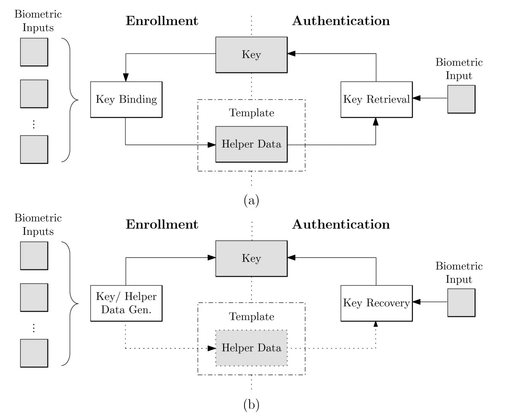
- Unlike §3.1, two templates are never compared with each other. The system stores only helper data — public information that reveals little about the template.Khác §3.1, không so hai template với nhau. Hệ thống chỉ lưu helper data — thông tin công khai, tiết lộ rất ít về template.
- At verification, helper data + query are used to recover a key; recovering the correct key means a match.Khi xác thực, helper data + truy vấn được dùng để khôi phục khoá; khôi phục đúng khoá nghĩa là khớp.
- Key binding binds a randomly chosen key to the template; key generation derives the key from the template itself.Key binding gắn một khoá chọn ngẫu nhiên vào template; key generation suy ra khoá từ chính template.
- Representatives: Fuzzy Commitment, Fuzzy Vault (binding) · Fuzzy Extractor (generation).Tiêu biểu: Fuzzy Commitment, Fuzzy Vault (gắn khoá) · Fuzzy Extractor (sinh khoá).
[2] Rathgeb & Uhl 2011 (original figurehình gốc) · [1] Jain et al. 2008, §3
Three tools behind every biometric cryptosystemBa công cụ đằng sau mọi hệ mật sinh trắc
| TermKhái niệm | IdeaÝ tưởng | Tiny exampleVí dụ nhỏ | Used inDùng trong |
|---|---|---|---|
| Error-correcting code (ECC)Mã sửa lỗi (ECC) | Adds redundancy so the original survives a few bit flips — exactly how scan-to-scan differences are “tolerated”.Thêm dư thừa để vẫn khôi phục được bản gốc khi vài bit bị lật — chính là cách “chịu” sai khác giữa các lần quét. | Repetition ×3:Mã lặp ×3: 10 → 111000 receivenhận 110000 → majority per blockđa số từng khối → 10 |
Fuzzy Commitment, Fuzzy Extractor |
| Cryptographic hash hHàm băm mật mã h | Easy to compute h(w), impossible to invert; used to check that recovery is correct without storing w.Dễ tính h(w), không thể đảo ngược; dùng để kiểm tra khôi phục đúng mà không cần lưu w. | store h(111000) → later compare h(w′)sau đó so h(w′) | Fuzzy Commitment, Fuzzy Vault |
| Polynomials & Lagrange interpolationĐa thức & nội suy Lagrange | A degree-n polynomial is fixed by n + 1 of its points; with fewer it cannot be rebuilt. Lagrange interpolation is the rebuild formula.Đa thức bậc n được xác định bởi n + 1 điểm; ít hơn thì không dựng lại được. Nội suy Lagrange là công thức dựng lại. | A line (degree 1) needs 2 points; a parabola (degree 2) needs 3.Đường thẳng (bậc 1) cần 2 điểm; parabol (bậc 2) cần 3. | Fuzzy Vault |
Compiled by the group; repetition codes and Lagrange interpolation are textbook material.Nhóm tổng hợp; mã lặp và nội suy Lagrange là kiến thức giáo trình.
Key binding · Fuzzy Commitment: XOR the template with a codewordKey binding · Fuzzy Commitment: XOR template với một từ mã
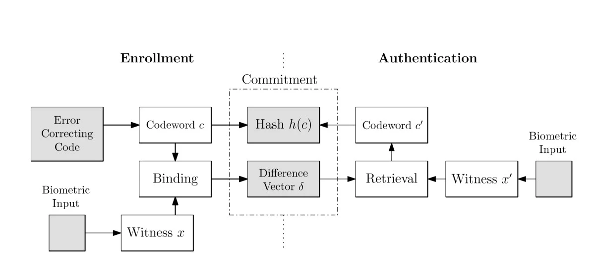
Juels & Wattenberg, ACM CCS 1999 · [2] Rathgeb & Uhl 2011 (original figurehình gốc)
Fuzzy Commitment — a 6-bit exampleFuzzy Commitment — ví dụ 6 bit
| StepBước | Genuine userNgười dùng thật | ImpostorKẻ giả mạo |
|---|---|---|
| Query x′Truy vấn x′ | 100101 differs from x in 1 bitkhác x 1 bit | 010010 differs in all 6 bitskhác cả 6 bit |
| x′ ⊕ 010 101 | 110000 | 000111 |
| Error correction (majority per block)Sửa lỗi (đa số theo khối) | 1, 0 → keykhoá 10 → w′ = 111000 | 0, 1 → keykhoá 01 → w′ = 000111 |
| Compare h(w′) with h(111000)So h(w′) với h(111000) | match → acceptkhớp → chấp nhận | no match → rejectkhông khớp → từ chối |
Example by the group following the mechanismVí dụ nhóm dựng theo cơ chế
Fuzzy Commitment: strengths, weaknesses, applicationsFuzzy Commitment: ưu điểm, nhược điểm, ứng dụng
StrengthsƯu điểm
- Very simple: XOR + error-correcting code + hash; compact storage.Rất đơn giản: XOR + mã sửa lỗi + hash; lưu trữ gọn.
- Besides matching, it releases a cryptographic key for further use.Ngoài so khớp còn giải phóng khoá mật mã để dùng tiếp.
- The user keeps no secret.Người dùng không phải giữ bí mật nào.
WeaknessesNhược điểm
- Only fixed-length bit strings; matching goes through the ECC instead of a dedicated matcher → usually lower accuracy.Chỉ cho chuỗi bit độ dài cố định; so khớp qua ECC thay vì bộ so khớp chuyên dụng → thường kém chính xác hơn.
- No built-in unlinkability / renewability: two commitments of the same person can be cross-matched (“decodability attack”) → salting must be added.Không sẵn có tính không liên kết / thu hồi: hai commitment của cùng người có thể bị ghép chéo (“decodability attack”) → phải thêm salting.
- If template bits are not random enough (common with deep features), helper data leaks more than expected.Nếu các bit template không đủ ngẫu nhiên (hay gặp với đặc trưng học sâu), helper data rò rỉ nhiều hơn dự kiến.
ApplicationsỨng dụng
- Biometrics that are naturally bit strings — above all iris (IrisCode).Sinh trắc vốn là chuỗi bit — tiêu biểu là mống mắt (IrisCode).
- Hao, Anderson & Daugman bound a 140-bit key to the IrisCode with a Fuzzy-Commitment-style scheme.Hao, Anderson & Daugman gắn một khoá 140 bit vào IrisCode bằng lược đồ kiểu Fuzzy Commitment.
- Recently extended to deep iris and fingerprint features.Gần đây mở rộng sang đặc trưng học sâu của mống mắt và vân tay.
Hao, Anderson & Daugman, IEEE Trans. Computers 2006 · [2] Rathgeb & Uhl 2011 · [4] Krivokuća Hahn & Marcel 2023
Key binding · Fuzzy Vault: hide a polynomial among chaff pointsKey binding · Fuzzy Vault: giấu đa thức giữa các điểm nhiễu (chaff)
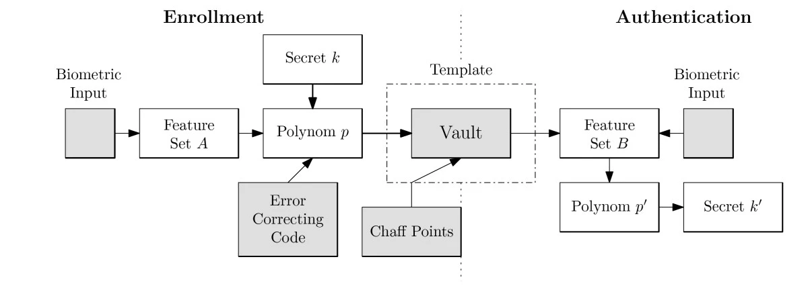
Juels & Sudan, ISIT 2002 · [2] Rathgeb & Uhl 2011 (original figurehình gốc)
Fuzzy Vault — unlocking a degree-1 vaultFuzzy Vault — mở một vault bậc 1
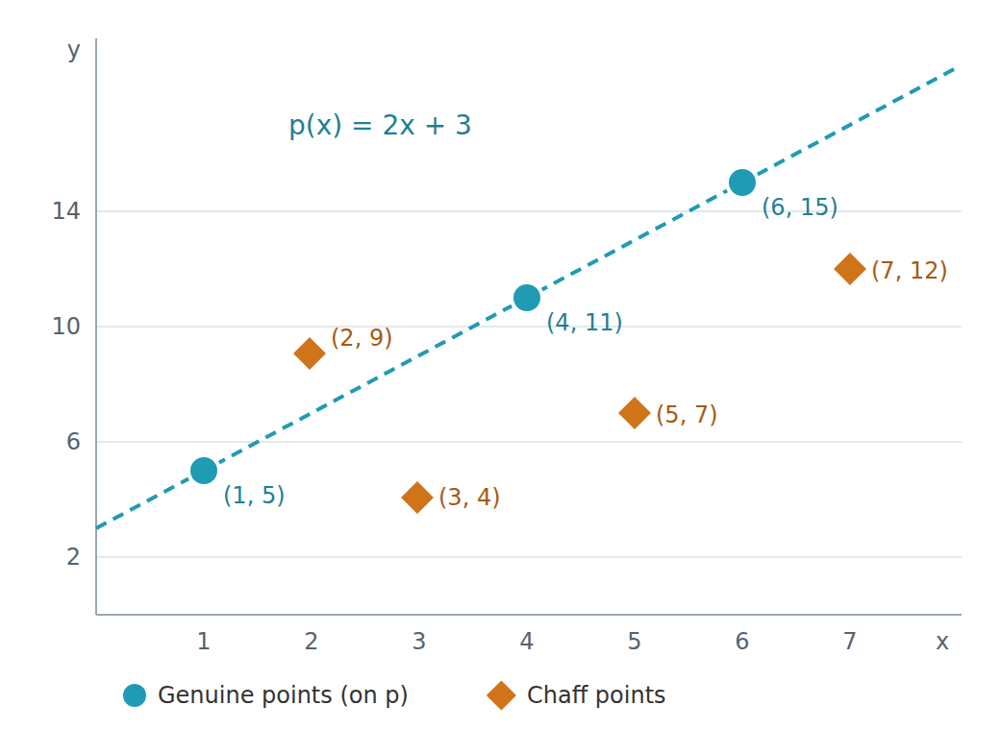
Example by the group followingVí dụ nhóm dựng theo [4], Juels & Sudan 2002
Fuzzy Vault: strengths, weaknesses, applicationsFuzzy Vault: ưu điểm, nhược điểm, ứng dụng
StrengthsƯu điểm
- Works with unordered sets of varying size — exactly the nature of minutiae.Dùng được với tập không thứ tự, kích thước thay đổi — đúng bản chất minutiae.
- Tolerates a few missing or extra elements.Chịu được thiếu / thừa vài phần tử.
- Releases a key for further use.Giải phóng khoá để dùng tiếp.
ApplicationsỨng dụng
One of the most popular methods of the branch — fingerprint, face, iris, signature. Recently on deep face embeddings: FNMR < 1% at FMR 0.01% with ≈ 28 bits of security.Một trong những phương pháp phổ biến nhất của nhánh — vân tay, khuôn mặt, mống mắt, chữ ký. Gần đây trên deep face embedding: FNMR < 1% tại FMR 0,01% với ≈ 28 bit an toàn.
WeaknessesNhược điểm
Key length ↔ accuracy (Jain et al., FVC2002-DB2, failure-to-capture 2%):Độ dài khoá ↔ độ chính xác (Jain et al., FVC2002-DB2, tỉ lệ không thu được mẫu 2%):
| degree nbậc n | GAR | FAR |
|---|---|---|
| n = 7 | 91% | 0.13% |
| n = 8 | 91% | 0.01% |
| n = 10 | 86% | 0% |
GAR ≈ 4% below the unprotected system; 2% of fingers have too few minutiae to build a vault.GAR thấp hơn hệ không bảo vệ ≈ 4%; 2% ngón tay không đủ minutiae để lập vault.
Three known attacks → no built-in unlinkability / renewability:Ba tấn công đã biết → không sẵn có tính không liên kết / thu hồi:
- Record multiplicity: two vaults of the same finger → genuine points coincide, chaff does not → chaff is filtered out.Record multiplicity: hai vault của cùng ngón → điểm thật trùng nhau, chaff thì không → lọc bỏ được chaff.
- Stolen key inversion: a leaked key reveals which points lie on p → the template leaks.Stolen key inversion: lộ khoá → biết điểm nào trên p → lộ template.
- Blended substitution: replace chaff with the attacker's own points → both can unlock.Blended substitution: thay chaff bằng điểm của kẻ tấn công → cả hai đều mở được.
[1] Jain et al. 2008 · [2] Rathgeb & Uhl 2011 · [4] Krivokuća Hahn & Marcel 2023
Key generation · Fuzzy Extractor: the key comes from the biometric itselfKey generation · Fuzzy Extractor: khoá sinh ra từ chính sinh trắc
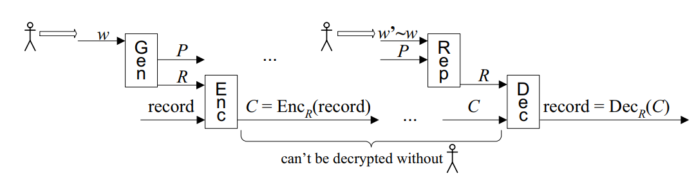
- Two procedures (Dodis, Reyzin & Smith): Gen turns biometric w into a nearly uniform key R plus helper data P; Rep turns a new sample w′ ≈ w plus P back into the same R.Hai thủ tục (Dodis, Reyzin & Smith): Gen biến sinh trắc w thành khoá gần đều R và helper data P; Rep biến mẫu mới w′ ≈ w cùng P trở lại đúng R.
- Using the key: R encrypts a record, C = EncR(record). Only P and C are stored — R is never stored.Dùng khoá: R mã hoá một bản ghi, C = EncR(record). Chỉ lưu P và C — không bao giờ lưu R.
- Checking without comparing: the genuine user rebuilds R and gets the record back; anyone else gets a wrong key and decryption fails. P and C are safe to keep public.Kiểm tra không cần so khớp: người thật dựng lại R và lấy lại bản ghi; người khác ra khoá sai, giải mã thất bại. P và C công khai vẫn an toàn.
- Unlike key binding: no random key is chosen and bound — the key is derived from the biometric data.Khác key binding: không chọn khoá ngẫu nhiên để gắn — khoá được suy ra từ chính dữ liệu sinh trắc.
Dodis, Reyzin & Smith, EUROCRYPT 2004 (original figurehình gốc) · Dodis et al., SIAM J. Comput. 2008
Fuzzy Extractor — reusing the 6-bit exampleFuzzy Extractor — dùng lại ví dụ 6 bit
| BlockKhối | Genuine userNgười dùng thật | ImpostorKẻ giả mạo |
|---|---|---|
| Gen: w → (P, R) | w = 101101. P = w ⊕ random codewordtừ mã ngẫu nhiên 111 000 = 010101 (+ public seedseed công khai). R = H(seed, w) — computed from w itselftính từ chính w | – |
| Enc: R encryptsEnc: R mã hoá | C = EncR(record). Store P and C; R is discarded.Lưu P và C; R bị huỷ. | – |
| Rep: (w′, P) → R | w′ = 100101 (1 bit differslệch 1 bit) → w′ ⊕ P = 110 000 → ECC → 111 000 → P ⊕ 111 000 = 101 101 = w → R′ = R | w″ = 010010 → 000 111 → 000 111 → 010 010 ≠ w → R* ≠ R |
| Dec: R decrypts CDec: R giải mã C | DecR(C) = record ✓ | DecR*(C) → failsthất bại ✗ |
Example by the group following the code-offset constructionVí dụ nhóm dựng theo cấu trúc code-offset
Fuzzy Extractor: strengths, weaknesses, applicationsFuzzy Extractor: ưu điểm, nhược điểm, ứng dụng
StrengthsƯu điểm
- A formal security proof: R is nearly uniformly random even given P.Có chứng minh an toàn hình thức: R gần như ngẫu nhiên đều kể cả khi biết P.
- The key can be used directly for encryption and signatures.Khoá dùng trực tiếp để mã hoá và ký số.
- No key needs to be stored anywhere.Không cần lưu khoá ở bất kỳ đâu.
WeaknessesNhược điểm
- Key stability ↔ key entropy: the same person must always get the same key (stability), different people must get different keys (entropy). Same key every time → high FAR; different key each time → high FRR.Ổn định ↔ entropy của khoá: cùng người luôn phải ra cùng khoá (ổn định), khác người phải ra khoá khác (entropy). Luôn một khoá → FAR cao; mỗi lần một khoá → FRR cao.
- Real biometric data is not random enough → the effective key is shorter than in theory; Jain et al.: key generation is hard to do well in practice.Dữ liệu sinh trắc thật không đủ ngẫu nhiên → khoá thực tế ngắn hơn lý thuyết; Jain et al.: sinh khoá rất khó làm tốt trong thực tế.
- Reuse (several helper data from one biometric) can leak — a “reusable fuzzy extractor” is needed.Dùng lại (nhiều helper data từ cùng một sinh trắc) có thể rò rỉ — cần “reusable fuzzy extractor”.
ApplicationsỨng dụng
- Deriving cryptographic keys directly from biometrics — e.g. encrypting a record with a biometric-derived key.Sinh khoá mật mã trực tiếp từ sinh trắc — vd. mã hoá bản ghi bằng khoá suy từ sinh trắc.
- Remote authentication protocols built on fuzzy extractors.Giao thức xác thực từ xa dựa trên fuzzy extractor.
Dodis et al. 2004/2008 · [1] Jain et al. 2008
Why hybrid methods are neededVì sao cần phương pháp lai
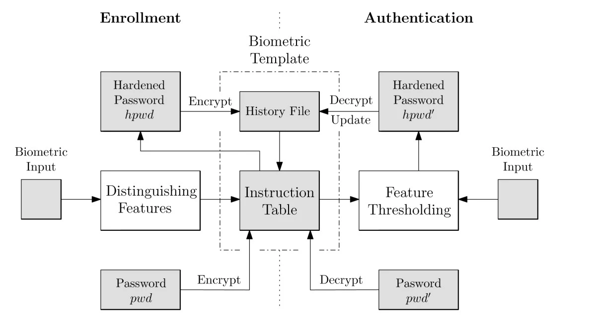
Nandakumar, Nagar & Jain, ICB 2007 (original figurehình gốc) · [1] Jain et al. 2008 · [4] Krivokuća Hahn & Marcel 2023
Homomorphic encryption: compute on ciphertexts, never decrypt the templateMã hoá đồng hình: tính trên bản mã, không bao giờ giải mã template
The DB is encrypted at rest, but to match you must decrypt: the original template sits in server memory at every login, and the key lives on the server too. Take the server → take both.CSDL được mã hoá khi lưu, nhưng muốn so khớp phải giải mã: template gốc nằm trong bộ nhớ server ở mỗi lần xác thực, khoá cũng ở server. Chiếm server → có cả hai.
Computing on ciphertexts gives the same result as computing on plaintexts:Tính trên bản mã cho cùng kết quả như tính trên dữ liệu rõ:
The server computes the match score without ever holding the decryption key.Server tính điểm so khớp mà không bao giờ cần khoá giải mã.
The third branch of §3.0 (store ciphertexts, match on ciphertexts) — not in Jain et al. 2008, which had only two branches.Nhánh thứ ba ở §3.0 (lưu bản mã, so khớp trên bản mã) — không có trong Jain et al. 2008 vốn chỉ chia hai nhánh.
| TypeLoại | OperationsPhép tính | How manySố lần | ExamplesVí dụ | SpeedTốc độ |
|---|---|---|---|---|
| PHE partiallymột phần | one kind: multiply or addchỉ một loại: nhân hoặc cộng | unlimitedkhông giới hạn | RSA, ElGamal (×); Paillier (+) | fastnhanh |
| SHE somewhat / leveledhạn chế / leveled | add and multiplycộng và nhân | limited: noise grows after each multiplicationgiới hạn: nhiễu tăng sau mỗi phép nhân | BGN 2005 (any adds, 1 multiply); leveled BFV, BGV, CKKSBGN 2005 (cộng tuỳ ý, 1 phép nhân); BFV, BGV, CKKS dạng leveled | mediumtrung bình |
| FHE fullyhoàn toàn | add + multiply → any functioncộng + nhân → mọi hàm | unlimited thanks to bootstrapping (Gentry 2009), which “cleans” the noisekhông giới hạn nhờ bootstrapping (Gentry 2009) “làm sạch” nhiễu | Gentry 2009, TFHE; BFV/BGV/CKKS + bootstrapping | slowestchậm nhất |
Gentry, STOC 2009 · Boddeti, BTAS 2018
Toy example — multiplying on ciphertexts (2 × 5 = 10)Ví dụ đồ chơi — nhân trên bản mã (2 × 5 = 10)
Textbook RSA is deterministic (Enc(10) is always 82), so it is not safe for real data — it only illustrates the homomorphic property. Real HE schemes (BFV, CKKS) are probabilistic.RSA sách giáo khoa là mã hoá tất định (Enc(10) luôn bằng 82) nên không an toàn cho dữ liệu thật — chỉ minh hoạ tính đồng hình. Các hệ HE thực tế (BFV, CKKS) là mã hoá xác suất.
Why HE fits face recognitionVì sao HE hợp với nhận dạng khuôn mặt
- Face embeddings are L2-normalised, so the cosine score is just an inner product s = Σ xi·yi.Face embedding được chuẩn hoá L2 nên điểm cosine chính là tích vô hướng s = Σ xi·yi.
- That needs only one multiplication level, then additions → SHE / leveled HE is enough, no bootstrapping.Chỉ cần một tầng nhân rồi cộng dồn → SHE / leveled HE là đủ, không cần bootstrapping.
- CKKS works on approximate real numbers; BFV needs the embedding quantised to integers.CKKS làm việc trực tiếp với số thực (xấp xỉ); BFV cần lượng tử hoá embedding thành số nguyên.
- Batching (SIMD) packs the whole 512-D vector into one ciphertext and computes on all slots in parallel.Batching (SIMD) đóng gói cả vector 512 chiều vào một bản mã và tính song song trên mọi ô.
Toy RSA computed by the groupRSA đồ chơi do nhóm tính · Boddeti, BTAS 2018
Who encrypts, who computes, who holds the key, who sees the scoreAi mã hoá, ai tính, ai giữ khoá, ai thấy điểm
- Capture → embedding x (enrol), y (verify)Chụp → embedding x (đăng ký), y (xác thực)
- Encrypt with public key pk → Enc(x), Enc(y)Mã hoá bằng khoá công khai pk → Enc(x), Enc(y)
- Store Enc(x) instead of xLưu Enc(x) thay cho x
- Score on ciphertexts: Enc(s) = Σ Enc(xi)·Enc(yi)Tính điểm trên bản mã: Enc(s) = Σ Enc(xi)·Enc(yi)
- Decrypt s = Dec(Enc(s))Giải mã s = Dec(Enc(s))
- s ≥ τ ? → ACCEPT / REJECTs ≥ τ ? → CHẤP NHẬN / TỪ CHỐI
Diagram by the groupSơ đồ do nhóm vẽ · Boddeti 2018 · Engelsma et al. 2022
HE in practice: state of the art, requirements, weaknessesHE trong thực tế: công trình tiêu biểu, yêu cầu, điểm yếu
FHE (Fan–Vercauteren) + batching + dimensionality reduction; SphereFace 512-D → encrypted template 16 KB, 0.01 s per match; negligible accuracy loss (LFW, IJB-A, IJB-B, CASIA).FHE (Fan–Vercauteren) + batching + giảm chiều; SphereFace 512 chiều → template mã hoá 16 KB, 0,01 s mỗi cặp; độ chính xác giảm không đáng kể (LFW, IJB-A, IJB-B, CASIA).
1:N search: compress the representation, then search on ciphertexts — gallery of 100 million in ≈ 500 s, 275× faster than before.Tìm kiếm 1:N: nén biểu diễn rồi tìm trên bản mã — gallery 100 triệu mẫu mất ≈ 500 s, nhanh hơn 275 lần.
Re-shapes the template to cut per-match cost and space: identification among 1 million encrypted templates in 126 ms, only ≈2× slower than plaintext.Biến đổi biểu diễn template để giảm chi phí mỗi phép so và không gian: nhận dạng trong 1 triệu template mã hoá mất 126 ms, chỉ chậm ≈2 lần so với dữ liệu rõ.
Decrypting yields the original embedding — all security rests on managing sk; an sk leak exposes the whole DB.Giải mã là ra embedding gốc — toàn bộ an toàn dồn vào quản lý sk; lộ sk là lộ cả CSDL.
Templates grow many times (2 KB → 16 KB in Boddeti, → 324 KB in our demo); matching tens to hundreds of times slower if unoptimised.Template lớn hơn nhiều lần (2 KB → 16 KB ở Boddeti, → 324 KB trong demo); so khớp chậm hơn hàng chục–hàng trăm lần nếu không tối ưu.
Cost grows linearly with the gallery; needs specialised techniques such as HERS or IDFace.Chi phí tăng tuyến tính theo số template; cần kỹ thuật chuyên biệt như HERS, IDFace.
Boddeti, BTAS 2018 · Engelsma, Jain & Boddeti, IEEE TBIOM 2022 · Kim et al., ICCV 2025 · [4] Krivokuća Hahn & Marcel, TIFS 2023
Comparing the approaches against ISO/IEC 24745So sánh các phương pháp theo ISO/IEC 24745
| MethodPhương pháp | IrreversibleKhông đảo ngược | UnlinkableKhông liên kết | RevocableThu hồi | AccuracyĐộ chính xác | SpeedTốc độ |
|---|---|---|---|---|---|
| Salting BioHashing | △ only while the key is secretchỉ khi khoá bí mật | ✓ different keyskhoá khác nhau | ✓ change keyđổi khoá | ✓ key kept;giữ khoá; ✗ key leakedlộ khoá | ✓ very fast (Hamming)rất nhanh (Hamming) |
| Non-invertible transformBiến đổi không khả nghịch Ratha, PolyProtect | ✓ even knowing params (by design)kể cả biết tham số (tuỳ thiết kế) | ✓ different paramstham số khác nhau | ✓ change paramsđổi tham số | △ usually dropsthường giảm | ✓ fastnhanh |
| Key binding Fuzzy Commitment, Fuzzy Vault | △ depends on helper-data entropyphụ thuộc entropy helper data | △/✗ record multiplicitydễ bị ghép nhiều bản ghi | △ key changes, still linkableđổi khoá được nhưng vẫn bị ghép | △ drops (matching via ECC decoding)giảm (so khớp bằng giải mã sửa lỗi) | △ mediumtrung bình |
| Key generation Secure sketch, Fuzzy Extractor | △ depends on helper-data entropyphụ thuộc entropy helper data | △/✗ | ✗ hard: key from a fixed biometrickhó: khoá sinh từ sinh trắc cố định | ✗ hard to be both stable and high-entropykhó vừa ổn định vừa entropy cao | ✓/△ |
| Homomorphic enc.Mã hoá đồng hình Boddeti, HERS, IDFace | ✓ vs server;với server; ✗ vs sk holdervới bên giữ sk | ✓ probabilistic encryptionmã hoá xác suất | ✓ new key, re-encryptkhoá mới, mã hoá lại | ✓ almost unchangedgần như không đổi | ✗ slow, large templates (improving)chậm, template lớn (đang cải thiện) |
Compiled by the group fromNhóm tổng hợp từ [1]–[4]
Recommendation by scenarioKhuyến nghị theo kịch bản
| ScenarioKịch bản | CharacteristicsĐặc điểm | UseNên dùng | WhyLý do |
|---|---|---|---|
| ATM (1:1) | User has a card and a PINNgười dùng có thẻ và PIN | Salting — key from PIN / cardSalting — khoá sinh từ PIN / thẻ | Jain 2008: secure enough if template and PIN do not leak together; fast; easy revocation.Jain 2008: đủ an toàn nếu template và PIN không cùng bị lộ; nhanh, thu hồi dễ. |
| Airport watch list (1:N)Danh sách theo dõi ở sân bay (1:N) | Non-cooperative subjects, carry no keyĐối tượng không hợp tác, không mang khoá | Non-invertible transform (system key)Biến đổi không khả nghịch (khoá của hệ thống) | Jain 2008: protects and stays revocable with no user input. Group's addition: HERS/IDFace-style HE if the infrastructure allows.Jain 2008: vừa bảo vệ vừa thu hồi được mà không cần đầu vào nào từ người dùng. Bổ sung: HE kiểu HERS/IDFace nếu hạ tầng đủ mạnh. |
| Match-on-card | Smart card, limited resourcesThẻ thông minh, tài nguyên hạn chế | Biometric cryptosystem (key binding)Hệ mật sinh trắc (key binding) | Jain 2008: it releases a key on a match — the card uses that key to report the result.Jain 2008: hệ này giải phóng khoá khi khớp — thẻ dùng khoá đó báo kết quả cho ứng dụng. |
| Mobile deviceThiết bị di động | Template on device, 1:1, must be fast and battery-friendlyTemplate trên máy, 1:1, cần nhanh và tiết kiệm pin | Light feature transform (PolyProtect, BioHashing) + secure hardware enclaveBiến đổi đặc trưng nhẹ (PolyProtect, BioHashing) + vùng bảo mật phần cứng | Group: low cost; PolyProtect was designed for mobile face verification.Bổ sung: chi phí thấp; PolyProtect được thiết kế cho xác thực khuôn mặt trên di động. |
| Server / cloud | Outsourced matching, untrusted serverSo khớp thuê ngoài, server không đáng tin | Homomorphic encryption (possibly hybrid with a transform)Mã hoá đồng hình (có thể lai với biến đổi đặc trưng) | Group: server never sees a template, accuracy kept; accept the cost; 1:N now feasible (IDFace: 1 M templates in 126 ms).Bổ sung: server không thấy template, độ chính xác giữ nguyên; chấp nhận chi phí; 1:N đã khả thi (IDFace: 1 triệu template trong 126 ms). |
Following Jain et al. 2008 + the group's additionsTheo Jain et al. 2008 + bổ sung của nhóm
Other directions — and how the families fit togetherCác hướng khác — và mối liên hệ giữa các họ phương pháp
[4] Krivokuća Hahn & Marcel, TIFS 2023 · Ross & Othman, TIFS 2011 · Kaur & Khanna, MTAP 2016 · Nandakumar et al., ICB 2007 · Pandey et al., CVPRW 2016
Experiment & conclusionThực nghiệm & tổng kết
- 4.1Experimental setupThiết lập thực nghiệm
- 4.2Accuracy resultsKết quả độ chính xác
- 4.3Revocability & unlinkabilityThu hồi & không liên kết
- 4.4Matching on ciphertexts (CKKS)So khớp trên bản mã (CKKS)
- 4.5Discussion & limitationsThảo luận & giới hạn
- 4.6Conclusion & research directionsKết luận & hướng nghiên cứu
Experiment: BioHashing on real face embeddingsThực nghiệm: BioHashing trên face embedding thật
| DataDữ liệu | LFW via sklearn fetch_lfw_people; people with ≥ 20 images → 62 people, 3,023 images; colour, 128×128 crop around the face.LFW qua sklearn fetch_lfw_people; giữ người có ≥ 20 ảnh → 62 người, 3.023 ảnh; ảnh màu, cắt 128×128 quanh khuôn mặt. |
| FeaturesTrích đặc trưng | FaceNet pre-trained on VGGFace2 (facenet-pytorch), no fine-tuning on LFW; 160×160, (x − 127.5)/128 → 512-D, L2-normalised (inner product = cosine).FaceNet huấn luyện sẵn trên VGGFace2 (facenet-pytorch), không tinh chỉnh trên LFW; 160×160, (x − 127,5)/128 → 512 chiều, chuẩn hoá L2 (tích vô hướng = cosine). |
| ProtocolGiao thức | 1 random enrolment image per person → 62 templates; the other 2,961 images each vs all 62 → 2,961 genuine and 180,621 impostor pairs (2,961 × 61).Mỗi người 1 ảnh đăng ký ngẫu nhiên → 62 template; 2.961 ảnh còn lại so với cả 62 → 2.961 cặp genuine và 180.621 cặp impostor (2.961 × 61). |
| BioHashing | m = 256 bits; per-person random 31-bit key seeds a 512×256 Gaussian matrix, orthogonalised by QR; subtract the public mean μ first (balances 0/1); bit = 1 if projection > 0; score = bit-agreement ratio (≈ 0.5 = random).m = 256 bit; mỗi người một khoá ngẫu nhiên 31 bit làm seed sinh ma trận Gauss 512×256, trực giao hoá bằng QR; trừ vector trung bình công khai μ trước (cân bằng 0/1); bit = 1 nếu giá trị chiếu > 0; điểm = tỉ lệ bit trùng (≈ 0,5 = ngẫu nhiên). |
| MetricsChỉ số | EER from the ROC (sklearn roc_curve) at FAR ≈ FRR; DET curve; genuine / impostor histograms.EER từ đường ROC (sklearn roc_curve) tại FAR ≈ FRR; đường DET; histogram genuine / impostor. |
| EnvironmentMôi trường | Google Colab (CPU); NumPy, scikit-learn, Matplotlib, PyTorch, facenet-pytorch, TenSEAL; fixed seed 2026 → reproducible.Google Colab (CPU); NumPy, scikit-learn, Matplotlib, PyTorch, facenet-pytorch, TenSEAL; seed cố định 2026 → lặp lại được. |
Notebook G3_BTP_demo.ipynb
Result 1 — secret key: better than the baseline; stolen key: worseKết quả 1 — giữ được khoá: tốt hơn mốc; lộ khoá: kém hơn
- Secret key → 0.11%. Impostors use another key, so their scores bunch around 0.5 (like two random bit strings), far from genuine ≈ 0.77. The gain comes from the second factor, not from better face recognition.Giữ khoá → 0,11%. Kẻ giả mạo dùng khoá khác nên điểm dồn quanh 0,5 (như hai chuỗi bit ngẫu nhiên), xa cụm genuine ≈ 0,77. Con số đẹp này đến từ yếu tố thứ hai (khoá), không phải nhận dạng khuôn mặt tốt hơn.
- Stolen key → 0.97%, worse than unprotected (0.70%): everyone shares one projection, only the face discriminates, and 256-bit binarisation loses information vs the 512-D real vector.Lộ khoá → 0,97%, còn tệ hơn không bảo vệ (0,70%): mọi người dùng chung một phép chiếu, chỉ còn khuôn mặt phân biệt, và nhị phân hoá xuống 256 bit làm mất thông tin so với vector thực 512 chiều.
- Same trend as Jain et al. (Fig. 11) → always report the stolen-token scenario.Cùng xu hướng với Jain et al. (Fig. 11) → luôn phải báo cáo kịch bản stolen-token.
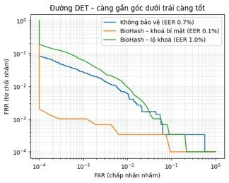
Output of notebook G3_BTP_demo.ipynbKết quả từ notebook G3_BTP_demo.ipynb
Why: the score distributions tell the storyVì sao: phân bố điểm kể lại câu chuyện
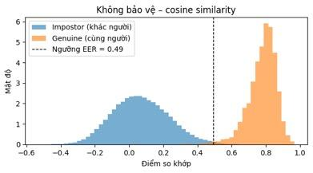
Impostors spread around 0, genuine around 0.8; a thin overlap near the EER threshold 0.49.Impostor trải quanh 0, genuine quanh 0,8; chồng lấn mỏng gần ngưỡng EER 0,49.
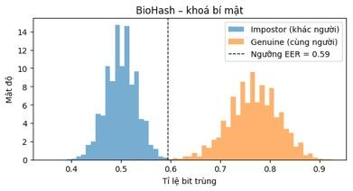
Impostors pile up at ≈ 0.5 (random strings), genuine ≈ 0.77 → a clean gap around the threshold 0.59.Impostor dồn về ≈ 0,5 (chuỗi ngẫu nhiên), genuine ≈ 0,77 → khoảng trống rõ quanh ngưỡng 0,59.
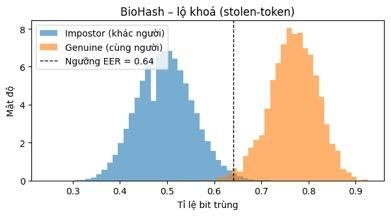
Same key for everyone → impostor scores spread out and touch the genuine cluster at the threshold 0.64.Mọi người chung khoá → điểm impostor giãn ra và chạm cụm genuine tại ngưỡng 0,64.
Output of notebook G3_BTP_demo.ipynb (axis labels in Vietnamese)Kết quả từ notebook G3_BTP_demo.ipynb
Result 2 — a revoked template is dead, and two systems cannot be linkedKết quả 2 — template bị thu hồi mất giá trị, hai hệ thống không liên kết được
A person's BioHash leaks. The system issues a new key and re-enrols from the enrolment image (George W Bush, the person with most images). Threshold = secret-key EER threshold, 0.59.Giả sử BioHash của một người bị lộ. Hệ thống cấp khoá mới và đăng ký lại từ ảnh đăng ký (George W Bush, người nhiều ảnh nhất). Ngưỡng = ngưỡng EER của kịch bản khoá bí mật: 0,59.
Old template and old key score ≈ 0.5 — no better than chance. The leaked template is worthless; the face is unchanged.Template cũ và khoá cũ chỉ cho ≈ 0,5 — không hơn đoán ngẫu nhiên. Template bị lộ đã mất giá trị, còn khuôn mặt vẫn nguyên.
Everyone is enrolled in two systems with independent keys; all templates of system 1 vs system 2.Mỗi người được đăng ký ở hai hệ thống với hai khoá độc lập; so toàn bộ template hệ thống 1 với hệ thống 2.
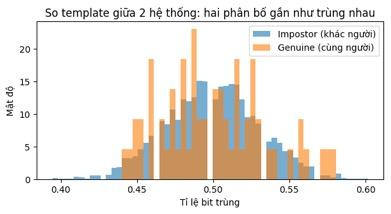
| Pair typeLoại cặp | MeanTB |
|---|---|
| Same person, 2 systems (62)Cùng người, 2 hệ thống (62) | 0.5000,500 |
| Different people (3,782)Khác người (3.782) | 0.5000,500 |
Same-person scores look exactly like different-person scores → holding both databases, an attacker still cannot tell whether two records belong to one person.Điểm cặp cùng người không khác gì cặp khác người → dù nắm cả hai CSDL, kẻ tấn công vẫn không biết hai bản ghi có thuộc cùng một người hay không.
Output of notebook G3_BTP_demo.ipynbKết quả từ notebook G3_BTP_demo.ipynb
Live demo: verify(real person, claimed identity, key used)Demo trực tiếp: verify(người thật, xưng danh, khoá dùng)
- The function lets us swap the real person, the claimed identity and the key being used.Hàm verify() cho phép đổi người thật, danh tính xưng và khoá được dùng.
- Case 2: an impostor with his own key scores ≈ 0.5 — pure chance.Trường hợp 2: kẻ giả mạo dùng khoá của mình chỉ đạt ≈ 0,5 — hoàn toàn ngẫu nhiên.
- Case 3: a leaked key does not let just anyone in — the attacker still needs a similar face.Trường hợp 3: lộ khoá không có nghĩa ai cũng qua — kẻ tấn công vẫn cần khuôn mặt đủ giống.
Sample run from notebook G3_BTP_demo.ipynbKết quả chạy mẫu từ notebook G3_BTP_demo.ipynb
Result 3 — matching on ciphertexts: same score, much higher costKết quả 3 — so khớp trên bản mã: cùng điểm, chi phí cao hơn nhiều
The 512-D template is encrypted with CKKS (TenSEAL; poly_modulus_degree = 8192, coeff_mod_bit_sizes = [60, 40, 40, 60], scale = 240). Cosine = inner product of the encrypted template and the verification vector, decrypted afterwards. One genuine pair.Template 512 chiều được mã hoá bằng CKKS (TenSEAL; poly_modulus_degree = 8192, coeff_mod_bit_sizes = [60, 40, 40, 60], scale = 240). Điểm cosine = tích vô hướng giữa template mã hoá và vector xác thực, sau đó mới giải mã. Đo trên một cặp genuine.
- Accuracy practically unchanged: the encrypted score equals the plaintext one to 5 decimals → same EER as unprotected.Độ chính xác gần như không đổi: điểm trên bản mã trùng dữ liệu rõ tới 5 chữ số thập phân → EER như hệ không bảo vệ.
- The price: ≈ two orders of magnitude slower matching and ≈ 160× larger templates — fine for 1:1, a problem for 1:N on a large DB.Cái giá: so khớp chậm hơn ≈ hai bậc độ lớn, template lớn hơn ≈ 160 lần — ổn với 1:1, thành vấn đề với 1:N trên CSDL lớn.
- The demo runs client and server in one program (one context holds the secret key) and times a single pair; a real deployment must separate the decryption key from the server.Demo gộp client và server trong một chương trình (cùng context giữ khoá bí mật) và chỉ đo một lần trên một cặp; triển khai thật phải tách khoá giải mã khỏi server.
| MetricChỉ số | PlaintextDữ liệu rõ | Ciphertext (CKKS)Bản mã (CKKS) |
|---|---|---|
| Cosine scoreĐiểm cosine | 0.861170,86117 | 0.861170,86117 (< 10−5) |
| Encrypt templateMã hoá template | – | 5.3 ms5,3 ms |
| Matching timeThời gian so khớp | 0.113 ms0,113 ms | 16.3 ms16,3 ms ≈ ×144 |
| Template sizeKích thước template | 2.0 KB2,0 KB | 324 KB ≈ ×160 |
Output of notebook G3_BTP_demo.ipynbKết quả từ notebook G3_BTP_demo.ipynb
Discussion and limitationsThảo luận và giới hạn
What the results meanÝ nghĩa kết quả
- BioHashing protects the template without losing accuracy while the key is secret (0.11% vs 0.70%) — thanks to the key as a second factor.BioHashing bảo vệ template không giảm độ chính xác khi giữ khoá (0,11% so với 0,70%) — nhờ khoá là yếu tố thứ hai.
- With a leaked key EER (0.97%) is above the unprotected system → reporting only the secret-key case overestimates the method.Lộ khoá thì EER (0,97%) cao hơn hệ không bảo vệ → chỉ báo kịch bản giữ khoá là đánh giá quá cao phương pháp.
- Revocability (old template 0.54 < 0.59) and unlinkability (0.500 = 0.500) shown with numbers.Thu hồi (template cũ 0,54 < 0,59) và không liên kết (0,500 = 0,500) được minh hoạ bằng số liệu.
- HE keeps accuracy and hides the embedding from the server, paid for in time and storage.HE giữ độ chính xác, server không thấy embedding, đổi lại tốn thời gian và dung lượng.
Strengths vs the original experimentĐiểm mạnh so với thí nghiệm gốc
- FaceNet trained on VGGFace2, not LFW → no leakage between training and evaluation data.FaceNet huấn luyện trên VGGFace2, không phải LFW → không rò rỉ giữa dữ liệu huấn luyện và đánh giá.
- Separate enrolment and verification images (1 enrolment image per person), whereas Jain et al. 2008 used resubstitution.Tách riêng ảnh đăng ký và ảnh xác thực (1 ảnh đăng ký/người), trong khi Jain et al. 2008 dùng resubstitution.
- Both the secret-key and the stolen-token scenarios are evaluated; fixed seed → reproducible.Đánh giá cả kịch bản giữ khoá và stolen-token; seed cố định → kết quả lặp lại được.
LimitationsGiới hạn
- Small dataset (62 people, 3,023 images): one false reject ≈ 0.034%, so EER 0.11% ≈ 3 errors — large statistical uncertainty; one random split only.Dữ liệu nhỏ (62 người, 3.023 ảnh): mỗi lần từ chối nhầm ≈ 0,034%, nên EER 0,11% ≈ 3 lỗi — sai số thống kê lớn; mới một lần chia ngẫu nhiên.
- One method (BioHashing), one modality (face); no Fuzzy Commitment / Vault or learned methods.Một phương pháp (BioHashing), một loại sinh trắc (khuôn mặt); chưa so với Fuzzy Commitment / Vault hay phương pháp học.
- Irreversibility not tested with real attacks; unlinkability only by mean score, not D↔sys; revocability shown on one person.Chưa kiểm tra không đảo ngược bằng tấn công thật; không liên kết mới đo bằng điểm trung bình, chưa dùng D↔sys; thu hồi mới minh hoạ trên một người.
- μ computed from the enrolment templates; HE measured on one pair with client and server merged.μ tính từ chính các template đăng ký; HE chỉ đo một cặp và gộp client/server.
Conclusion & research directionsKết luận & hướng nghiên cứu
1 · Protection need not cost accuracy.1 · Bảo vệ template không nhất thiết hy sinh độ chính xác.
2 · Security lives in the key2 · An toàn nằm ở khoá — always evaluate the stolen-token scenario.luôn phải đánh giá kịch bản stolen-token.
3 · Revocable and unlinkable3 · Thu hồi được và không liên kết — a new key makes the old template useless.đổi khoá là template cũ vô hiệu.
- Soft-biometric leakage: protected templates may still reveal gender, age, ethnicity — measure and reduce it.Rò rỉ thông tin mềm: template bảo vệ vẫn có thể lộ giới tính, tuổi, sắc tộc — cần đo và giảm thiểu.
- Scaling to 1:N: BioHashing needs a key per user; HE is costly for millions of templates.Mở rộng cho 1:N: BioHashing phụ thuộc khoá từng người; HE tốn kém khi CSDL có hàng triệu template.
- Rare in industry: most commercial systems rely on hardware protection (secure enclave) instead of template transformation.Ít triển khai trong công nghiệp: hệ thống thương mại chủ yếu dựa vào bảo vệ phần cứng (secure enclave) thay vì biến đổi template.
- Test irreversibility experimentally: real reconstruction attacks and standard measures (ISO/IEC 24745, 30136), not only theory.Đánh giá không đảo ngược bằng thực nghiệm: tấn công tái tạo thật và thước đo chuẩn (ISO/IEC 24745, 30136), không chỉ lập luận lý thuyết.
Review questionsCâu hỏi ôn tập
Ch. 1Ch. 1Why is a leaked biometric template more serious than a leaked password?Vì sao lộ template sinh trắc nghiêm trọng hơn lộ mật khẩu?
Ch. 2Name the four requirements for protected templates under ISO/IEC 24745.Nêu bốn yêu cầu đối với template được bảo vệ theo ISO/IEC 24745.
Ch. 2What is EER? Why is a low EER not enough to conclude that a system is secure?EER là gì? Vì sao EER thấp chưa đủ để kết luận một hệ thống an toàn?
Ch. 3How do feature transformation (cancelable biometrics) and biometric cryptosystems differ?Biến đổi đặc trưng (cancelable biometrics) khác hệ mật sinh trắc (biometric cryptosystem) ở điểm nào?
Ch. 4In the demo, why is BioHashing's EER with a secret key lower than the unprotected system, and what happens when the key leaks?Trong demo, vì sao EER của BioHashing khi giữ khoá lại thấp hơn cả hệ không bảo vệ, và điều gì xảy ra khi khoá bị lộ?
Click a question to show a suggested answer.Bấm vào câu hỏi để xem gợi ý trả lời.
ReferencesTài liệu tham khảo
- A. K. Jain, K. Nandakumar, A. Nagar, “Biometric template security,” EURASIP J. Adv. Signal Process., 2008.
- C. Rathgeb, A. Uhl, “A survey on biometric cryptosystems and cancelable biometrics,” EURASIP J. Inf. Secur., 2011.
- V. M. Patel, N. K. Ratha, R. Chellappa, “Cancelable biometrics: A review,” IEEE Signal Process. Mag., 2015.
- V. Krivokuća Hahn, S. Marcel, “Biometric template protection for neural-network-based face recognition systems: A survey of methods and evaluation techniques,” IEEE TIFS, 2023.
- V. Krivokuća Hahn, M. Gomez-Barrero, A. Ross, S. Marcel (eds.), Handbook of Biometric Template Protection, Springer, 2026.
- ISO/IEC 24745:2022, Biometric information protection.
- ISO/IEC 30136:2018, Performance testing of biometric template protection schemes.
- N. K. Ratha, S. Chikkerur, J. H. Connell, R. M. Bolle, “Generating cancelable fingerprint templates,” IEEE TPAMI, 2007.
- A. B. J. Teoh, D. C. L. Ngo, A. Goh, “BioHashing: two factor authentication featuring fingerprint data and tokenised random number,” Pattern Recognition, 2004.
- A. Juels, M. Wattenberg, “A fuzzy commitment scheme,” ACM CCS, 1999.
- A. Juels, M. Sudan, “A fuzzy vault scheme,” IEEE ISIT, 2002.
- Y. Dodis, L. Reyzin, A. Smith, “Fuzzy extractors: How to generate strong keys from biometrics and other noisy data,” EUROCRYPT, 2004.
- K. Nandakumar, A. Nagar, A. K. Jain, “Hardening fingerprint fuzzy vault using password,” ICB, 2007.
- F. Hao, R. Anderson, J. Daugman, “Combining crypto with biometrics effectively,” IEEE Trans. Computers, 2006.
- V. N. Boddeti, “Secure face matching using fully homomorphic encryption,” IEEE BTAS, 2018.
- J. J. Engelsma, A. K. Jain, V. N. Boddeti, “HERS: Homomorphically encrypted representation search,” IEEE TBIOM, 2022.
- Kim et al., “IDFace,” ICCV, 2025.
- C. Gentry, “Fully homomorphic encryption using ideal lattices,” STOC, 2009.
- G. Mai et al., “On the reconstruction of face images from deep face templates,” IEEE TPAMI, 2019.
- P. Terhörst et al., “Beyond identity: What information is stored in biometric face templates?,” IJCB, 2020.
- M. Gomez-Barrero et al., “General framework to evaluate unlinkability in biometric template protection systems,” IEEE TIFS, 2018.
- A. Ross, A. Othman, “Visual cryptography for biometric privacy,” IEEE TIFS, 2011.
- R. K. Pandey et al., “Deep secure encoding for face template protection,” CVPRW, 2016.
- V. Talreja, M. C. Valenti, N. M. Nasrabadi, “Zero-shot deep hashing and neural network based error correction for face template protection,” IEEE BTAS, 2019.
- Regulation (EU) 2016/679 (GDPR), Art. 9 · Decree 13/2023/NĐ-CP · Decision 2345/QĐ-NHNN · Law on Personal Data Protection (2025).
Thank you — questions?Cảm ơn — mời thầy cô và các bạn đặt câu hỏi
Help VietBank choose a protection schemeGiúp VietBank chọn phương pháp bảo vệ
VietBank is launching biometric login. Customers use face login in the mobile app and a fingerprint at ATMs. All templates are stored on the bank's central server. VietBank also shares customer data with its partner Manulife Vietnam, which runs its own fingerprint system. In each question, one VietBank team has a requirement — help them choose.VietBank triển khai đăng nhập bằng sinh trắc. Khách hàng đăng nhập ứng dụng bằng khuôn mặt và dùng vân tay tại ATM. Mọi template được lưu trên máy chủ trung tâm của ngân hàng. VietBank còn chia sẻ dữ liệu khách hàng với đối tác Manulife Vietnam — bên này có hệ thống vân tay riêng. Mỗi câu hỏi là yêu cầu của một nhóm trong VietBank — hãy giúp họ chọn.
What VietBank choseVietBank đã chọn gì
| RequirementYêu cầu | SchemePhương pháp | GainĐược | Give upĐánh đổi |
|---|---|---|---|
| App with a token, lowest FARỨng dụng có token, FAR thấp nhất | BioHashing | Two factors, renewableHai yếu tố, thu hồi được | Token leak = unprotectedLộ token = như không bảo vệ |
| ATM, no tokenATM, không token | Non-invertible transformBiến đổi không khả nghịch | No user secretKhông cần bí mật người dùng | Accuracy (≈80 more rejections per 1,000)Độ chính xác (≈80 lượt từ chối thêm / 1.000) |
| Iris card releasing a keyThẻ mống mắt giải phóng khoá | Fuzzy Commitment | Simple, releases a keyĐơn giản, giải phóng khoá | Bit strings only, linkableChỉ chuỗi bit, liên kết được |
| Shared fingerprint vaultsVault vân tay dùng chung đối tác | Hybrid (password hardening)Lai (làm cứng bằng mật khẩu) | Unlinkable, renewableKhông liên kết, thu hồi được | Password againLại phải nhớ mật khẩu |
| Key never storedKhông bao giờ lưu khoá | Fuzzy Extractor | Key rebuilt from the biometricKhoá dựng lại từ sinh trắc | Stability vs. entropyỔn định vs. entropy |
| Untrusted cloudCloud không tin cậy | Homomorphic encryptionMã hoá đồng hình | Cloud never sees templatesCloud không thấy template | Cost, key holderChi phí, người giữ khoá |
Thank you for listeningCảm ơn thầy cô và các bạn đã lắng nghe
Templates can be protected — but every scheme trades something: accuracy, convenience, a secret to keep, or compute. The right choice depends on who holds the key and where matching happens.Template có thể được bảo vệ — nhưng phương pháp nào cũng phải đánh đổi: độ chính xác, sự tiện lợi, một bí mật cần giữ, hoặc tài nguyên tính toán. Lựa chọn đúng phụ thuộc vào ai giữ khoá và so khớp diễn ra ở đâu.